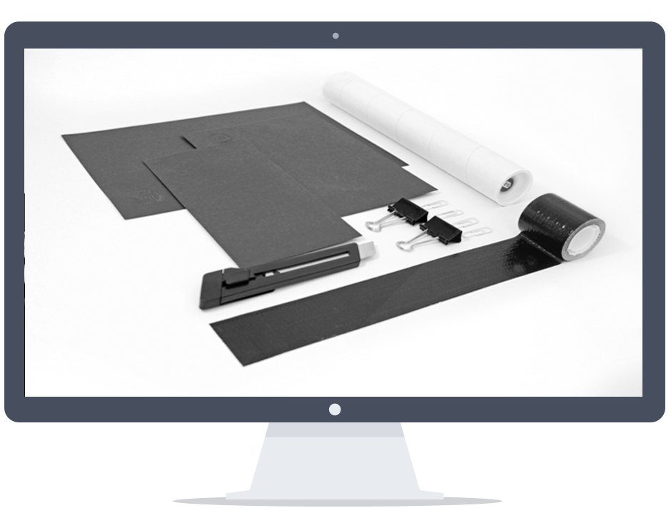
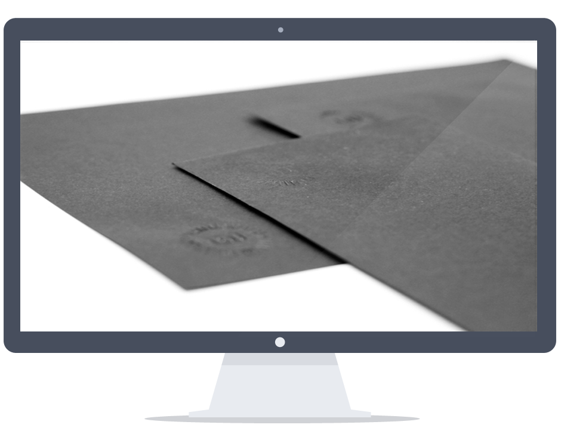

- 
- 
Digital Marketing
In today's fast-paced digital landscape, a powerful marketing strategy is your gateway to success. At ONòRA., we craft compelling digital marketing strategies that seamlessly integrate search engine optimization (SEO), pay-per-click (PPC) advertising, social media marketing, and email campaigns Our data-driven insights ensure your brand stands out and reaches its full potential. We design an intimate roadmap to ensure your brand appears on the screen of your target audience again and again - at the right time, in the right place.
Digitizing The Marketing Journey
Should add significant value to your customer experience by enabling :
Analytics
We put systems in place to collect and manage FPD First-party data (FPD) is the collected data that you effectively own and can utilise in performance-targeted digital marketing.
Lead Generation
Attract, nurture and close more deals with your newly created lead generation pipeline geared for success. high volume to high value. We operate to drive performance and deliver sales-qualified leads in spades. Generate demand and increase sales with a lead flow that cuts through the noise and responds to seasonality, changing market and consumer needs.